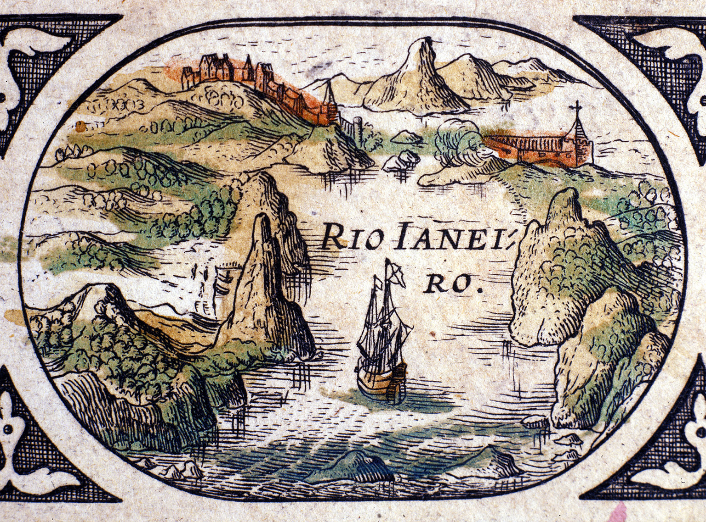
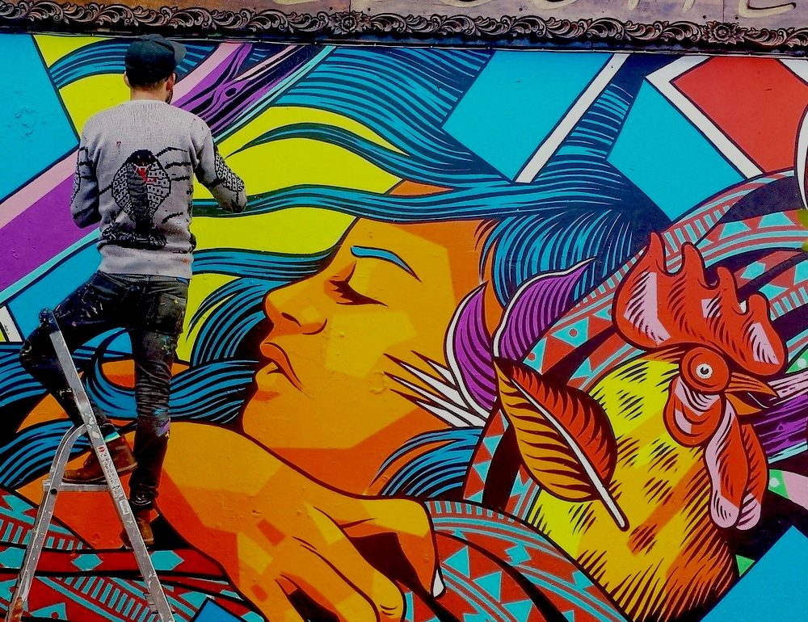
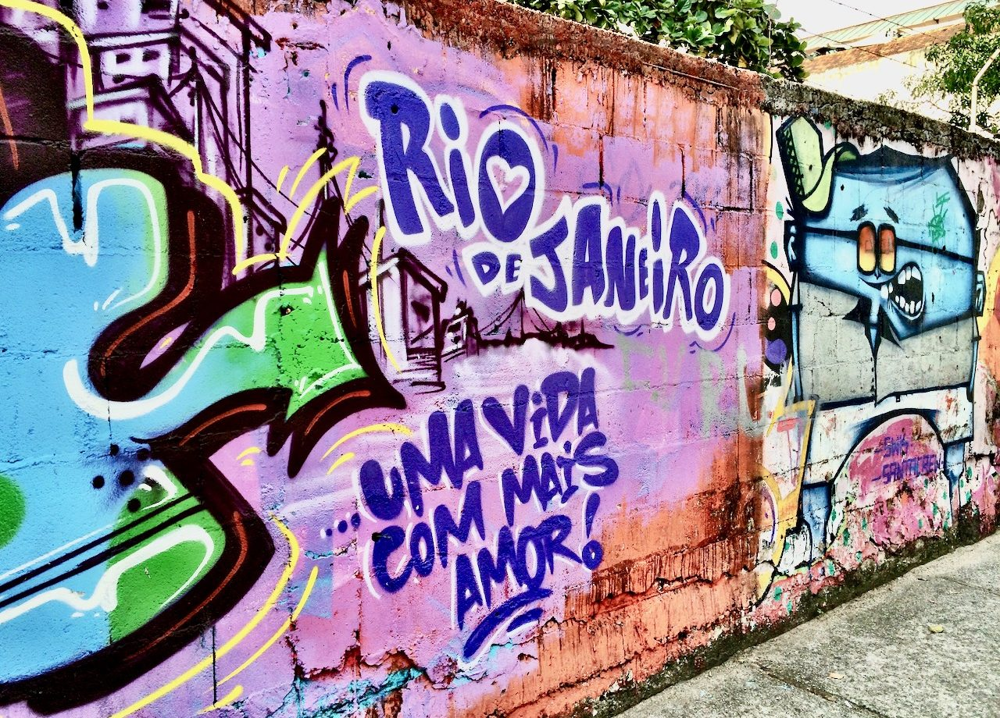
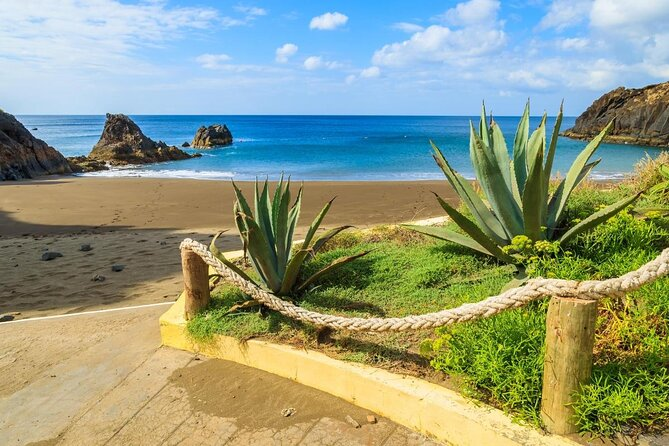
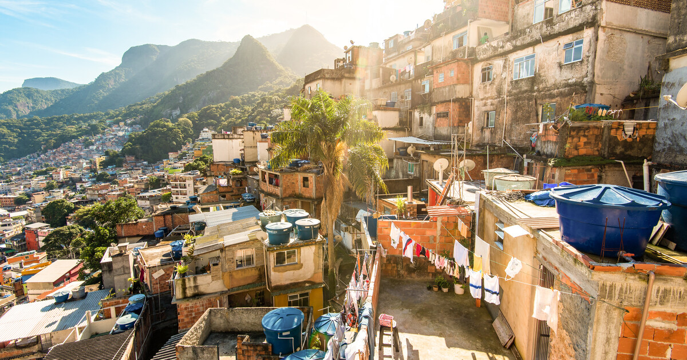
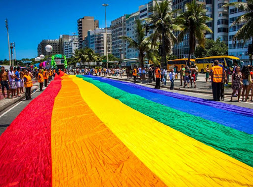

HISTORY OF RIO
A Brief Walk Through History
Rio de Janeiro is the city it is today because of its rich historical past. On the 1st January 1502 Portuguese rulers were the first ones to rule Rio when they landed on the soil of Guanabara Bay. In 1555 the French Huguenots established a colony, but they were driven out (1560–67) by Mem de Sá, governor-general of the Portuguese colony of Brazil. To protect from further invasions, the city was moved to a safer position on a hill, which was later named ‘Castle Hill’. At the same time the city of São Sebastião do Rio de Janeiro was founded by Mem de Sá's cousin. The settlement was captured and held for ransom by the French in 1711. Rio gained importance in the 18th cent., when it was designated the shipping point for all gold from the interior. It replaced Bahia (now Salvador) as the capital of Brazil in 1763 and subsequently became capital of the exiled royal court of Portugal (1808–21), the Brazilian empire (1822), and the federal republic (1889). It was superseded as capital by Brasília in 1960. The city hosted the 2016 Summer Olympics

A Liberated Rio
As Rio achieved independence from the Portuguese rulers, the city expanded politically, culturally, economically and architecturally. Public transportation in the form of horse-drawn trolleys allowed transport to places like Botafogo, Sao Cristovao, Tijuca which were somewhat far from the city. Rio became the political, economic and cultural centre of Brazil. Many talented artisans, leaders, writers and notable people played a significant role in the cultural development of the city. Along with being the busiest port in Brazil, the rail & road infrastructure lead to the development of the trade industry
Rio As Brazil's Capital
When Brazil achieved independence in 1889, Rio was named the capital. With years passing by, Rio has changed, in terms of infrastructure and financially. After World War II, Rio shifted from an agricultural economy to an industrial economy. Bridges were built between important cities, skyscrapers were constructed, and free-ways were developed. The population of the city increased in exponentially , and this turned out to be a malediction. Even if labour needed the industries to develop, labourers were too many, and the number of poor and unskilled people increased. This situation exists even today and puts intense pressure on Rio’s resources. Hence why Rio is one of the most populated cities in the world.
Present Rio
In the 1960s the capital of Brazil was moved from Rio to Brasilia and later to Sao Paolo, to reduce the economic and financial pressure on Rio. Political power was moved to the interior of the country. Today along with its various ethnic groups, Rio is making its presence felt in the industrial, service and tourism sector. Major multinational companies have their headquarters in Rio, and the city does have its influence on the Brazilian economy, as a whole.
FACTS
Rio is known all over the world as the wonderful city, ‘A Cidade Maravilhosa’. But if you think the beaches and samba are all Rio has to offer, think twice. There are many interesting facts about Rio de Janeiro to discover still.
Here are some fun facts:
Legal street art


Yes you read that right art on the streets is legal! Stroll through the streets of Rio and it won’t take long to see how much street art decorates the city’s buildings. As long as artists have permission from a building’s owner and it is not an historic building, they can paint it with any designs they want. Some of Rio’s best street artists include Marcelo Ment.
Beaches

According to TripAdvisor’s 2020 Traveller’s Choice Awards, the state of Rio de Janeiro hosts 5 of the best beaches in South America. And one of them is located within the city of Rio de Janeiro: Prainha. With 98 beaches in total, the longest beach in the city of Rio de Janeiro is Reserva. Reserva Beach is 8km in length and is located in Barra da Tijuca.
Home to the world’s largest urban forest
The Tijuca Forest is the largest man-made urban forest in the world, Rio’s wonderful mix of nature and urban life. Before reforestation, the place was home to coffee farms. Today, the Tijuca National Park is home to 328 species of animals, including amphibians, birds, and mammals. Some of them are in danger of extinction. It is also home to several tourist attractions such as the Christ the Redeemer statue, the Vista Chinesa and Parque Lage.
Christ the Redeemer is one of the new Seven Wonders of the World
The most symbolic and iconic of Rio’s attractions is the Christ the Redeemer, a huge statue of Jesus Christ that overlooks the city from its perch on top of the Corcovado mountain. In 2007, it was elected as one of the World’s New Seven Wonders, joining the exclusive list that includes the Great Wall of China and Machu Picchu in Peru.
Samba schools are more than just Carnival parades
Brazil’s samba schools are mostly famed for their vibrant appearances during Rio’s Carnival parades. However, they have a much deeper involvement in their local community. Often based near favelas (low-income Brazilian settlements), the samba schools spend all year preparing for the following year’s parades and provide free education, such as English classes and sports activities, to favela residents who aren’t able to afford those resources. The schools hold weekend events with samba dancing and feijoada, a type of Brazilian bean stew. As a result, people are passionately loyal to samba schools the same way they are to football teams.
Rio has the biggest Carnival party in the world
Rio de Janeiro has the largest Carnival party in the world. In 2004, over 400,000 foreign tourists flocked to the city for the celebrations to join the 5 million locals who already participate in the famous parades and street parties.
The city’s nickname is ‘Cidade Maravilhosa’
Which, if you’re Portuguese is up to scratch, you will know means “Marvellous City”.
Its Christ the Redeemer statue is electric!!
Owing to its lofty location, Rio’s iconic Christ the Redeemer statue is frequently struck by lightning.Most incidents pass without drama, but in 2014 the effigy lost a thumb during a storm.
It’s home to Brazil’s largest favela

Rocinha is the biggest favela in Brazil. Officials claim 70,000 inhabitants are crammed in there, but unofficial estimates reckon 180,000 is closer to the mark.
It’s the gay capital of Brazil

14 per cent of the population class themselves as non-heterosexual.